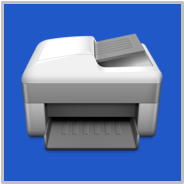
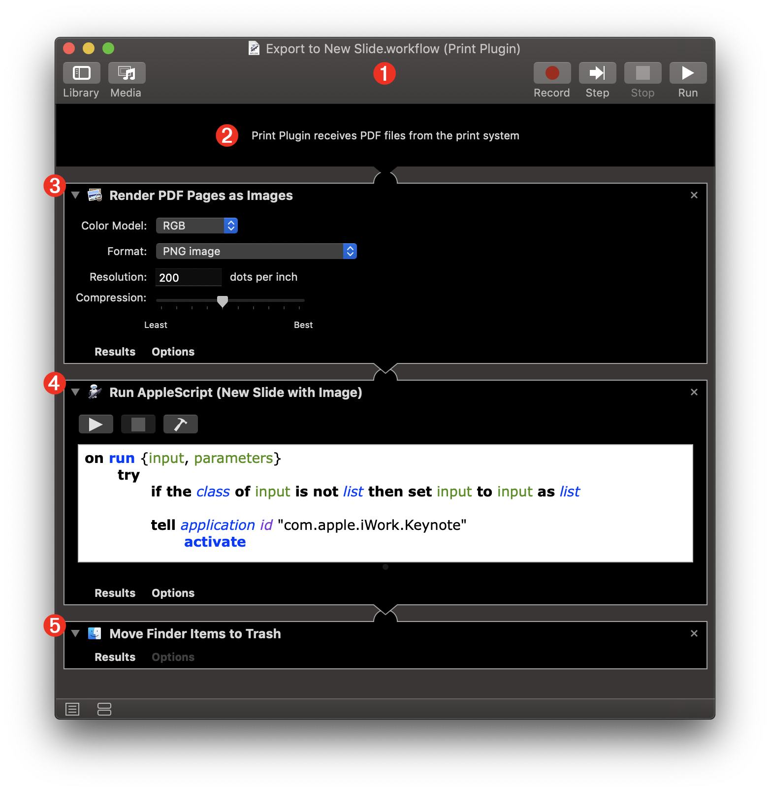
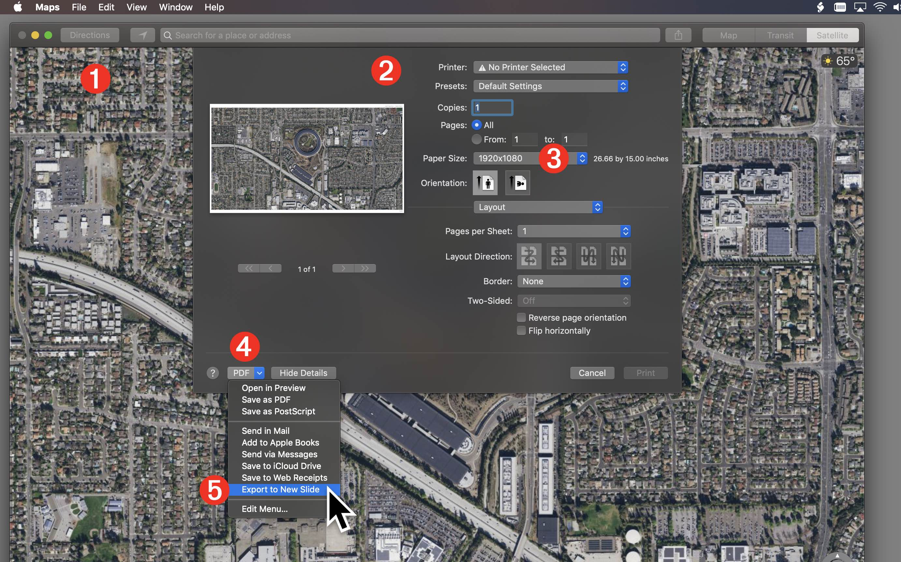
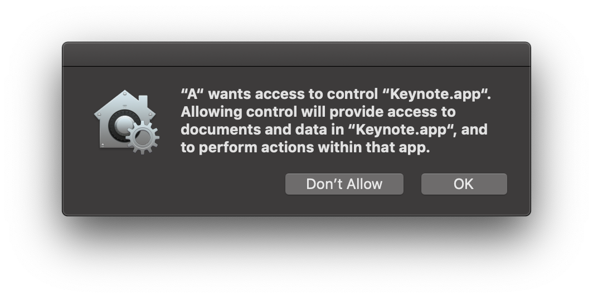
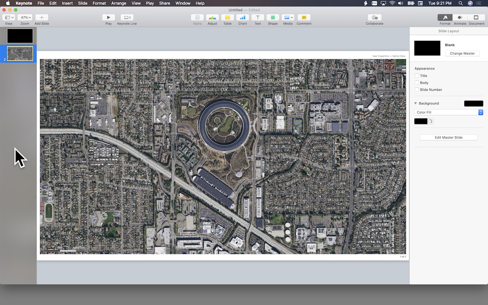
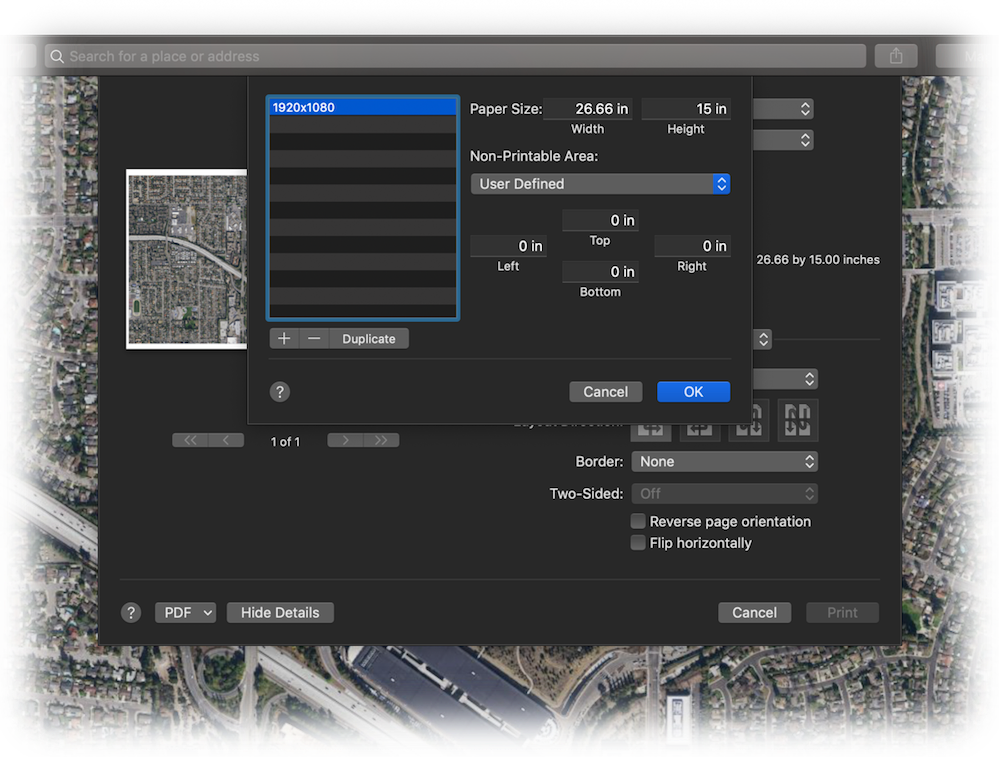

TAP TO HIDE SIDEBAR





Automator: Print Plugins (PDF)
By default, Automator includes a workflow template for processing PDF files generated when the user selects a Print Plugin workflow from the PDF popup menu in the application Print dialog.
The following example details the creation of an Automator PDF Print Plugin that adds a new slide containing an image of the current map in the Maps app, to a new slide in a Keynote presentation.
Example: Export Map to Keynote as Image
This 3-action workflow renders an image from the PDF file generated using the PDF popup menu in the Maps print dialog. It includes an AppleScript script (provided here) that performs the task of creating a new slide in Keynote and importing the image rendered by the first workflow action. The workflow ends by “cleaning-up after itself” by deleting the generated image file after the import process has completed.
DOWNLOAD the example Print Plugin workflow file.
1 The Automator Print Plugin workflow document.
2 The input banner declares that the workflow receives PDF files from the macOS print system as the workflow input.
3 The Render PDF Pages as Images action will render the printed PDF pages to images of the indicated format and resolution. Each PDF page will be rendered to a single image file, which will be passed to the next action for processing.

4 The Run AppleScript action contains the AppleScript script shown below that creates a new image slide in the frontmost Keynote document for each of the rendered PDF pages. If no presentation is currently open, a new one will be created. References to the rendered images passed as input to this action will be passed through to the next action.
5 The Move Finder Items to the Trash action will delete the images files previously rendered into the user’s Temporary Items folder.
The AppleScript Script
The following AppleScript script is designed to process the rendered images passed to it as input. Each image file will be placed on a new slide in the frontmost Keynote document. To use in a workflow, add the Run AppleScript action to the workflow and replaces its default contents with this script.
| New Image Slide(s) | ||
| 01 | on run {input, parameters} | |
| 02 | try | |
| 03 | if the class of input is not list then set input to input as list | |
| 04 | ||
| 05 | tell application id "com.apple.iWork.Keynote" | |
| 06 | activate | |
| 07 | ||
| 08 | if not (exists document 1) then | |
| 09 | make new document | |
| 10 | end if | |
| 11 | ||
| 12 | tell the front document | |
| 13 | set docWidth to its width | |
| 14 | set docHeight to its height | |
| 15 | ||
| 16 | set the masterSlideNames to the name of every master slide | |
| 17 | ||
| 18 | repeat with i from 1 to the count of input | |
| 19 | set aImageFile to item i of input | |
| 20 | ||
| 21 | if "Blank" is in the masterSlideNames then | |
| 22 | set aSlide to ¬ | |
| 23 | make new slide with properties {base slide:master slide "Blank"} | |
| 24 | else | |
| 25 | set aSlide to make new slide | |
| 26 | end if | |
| 27 | ||
| 28 | tell aSlide | |
| 29 | set aImage to make new image with properties {file:aImageFile} | |
| 30 | end tell | |
| 31 | ||
| 32 | tell aImage | |
| 33 | set imgWidth to its width | |
| 34 | set imgHeight to its height | |
| 35 | end tell | |
| 36 | ||
| 37 | -- image height based on setting new image width to slide width | |
| 38 | set newImgHeight to (imgHeight * docWidth) / imgWidth | |
| 39 | -- is new image height greater than or equal to doc height? | |
| 40 | if newImgHeight is greater than or equal to docHeight then | |
| 41 | set newImgWidth to docWidth | |
| 42 | -- center image vertically | |
| 43 | set vOffset to ((newImgHeight - docHeight) / 2) * -1 | |
| 44 | set hOffset to 0 | |
| 45 | else | |
| 46 | -- scale image height to match slide height | |
| 47 | set newImgHeight to docHeight | |
| 48 | set newImgWidth to (docHeight * imgWidth) / imgHeight | |
| 49 | -- center image horizontally | |
| 50 | set vOffset to 0 | |
| 51 | set hOffset to ((newImgWidth - docWidth) / 2) * -1 | |
| 52 | end if | |
| 53 | ||
| 54 | tell aImage | |
| 55 | set its width to newImgWidth | |
| 56 | set its height to newImgHeight | |
| 57 | set its position to {hOffset, vOffset} | |
| 58 | end tell | |
| 59 | ||
| 60 | end repeat | |
| 61 | end tell | |
| 62 | end tell | |
| 63 | on error errorMessage | |
| 64 | display dialog errorMessage buttons {"Cancel"} default button 1 | |
| 65 | end try | |
| 66 | ||
| 67 | return input | |
| 68 | end run | |
Using the Plugin
Using the Print Plugin is a simple process, outlined here:
1 The map document window. Although this example is shown in satellite view without sidebars and location pins, you can setup your maps as you like.
2 The print sheet appears over the document window after “Print…” is selected from the File menu.
3 This example optionally uses a user-created custom paper size that matches the dimensions of the target presentation. The map will automatically expand to fit the indicated size.

4 The PDF popup menu that list the PDF export options, one of which is the installed example Print Plugin workflow.
5 Select the Print Plugin workflow to begin PDF export and image conversion and placement into Keynote.
Starting with macOS Mojave (v10.14), workflows that contain Apple Event scripts targeting applications, will prompt the user for an initial approval of the workflow. This approval is only required once.

The rendered image file will be imported to a new slide added to the current Keynote document. If no presentation is open in Keynote, a new one using default settings will be created.

Custom Printer Paper Sizes
PRO TIP: use the Paper Size popup menu in the Print Setup dialog to create custom paper sizes that match the standard slide sizes you use for your presentations. The custom printer settings will work well with the example PDF Plugin to create images of the appropriate size for use in the Keynote presentations.
In this example, a custom printer paper size that matches 1920 x 1080 pixels was created and used.

This webpage is in the process of being developed. Any content may change and may not be accurate or complete at this time.
DISCLAIMER